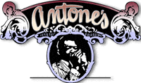
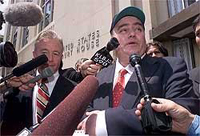

Нужно еще раз пояснить, почему снова и снова обсуждается эта тема
Клуб "Этоунз" был родным домом для блюзмэнов поколений от Мадди Уотерса до Стиви Рея Воэна. В сложнейшие для блюза времена он был главным его прибежищем. Насколько "побочный" бизнес Клиффорда Энтоуна помогал поддерживать клуб на плаву во времена кризиса жанра - останется неизвестным. Во всяком случае, клуб он успел обезопасить от возможных нападок закона; а себя - нет. Мы возвращаемся к этой теме уже в третий раз только потому, насколько важным был для выживания блюза клуб и легальная деятельность м-ра Энтоуна.
Предыдущее сообщение об обвинении К.Энтоуна.
Итак

26 мая федеральный суд рассматривал в очередной раз дело по обвинению м-ра Энтоуна в торговле наркотиками. Государственным обвинителям удалось доказать его причастность в середине 90-х годов к перепродаже 15 000 фунтов (менее 7 тонн) марихуаны. Обвинители требовали от 6 до 7 лет тюрьмы, нажимая, что свою общественную репутацию щедрого жертвователя и мецената м-р Энтоун приобрел на грязных деньгах. Меж тем, общественность не желала молчать. О заслугах Энтоуна перед блюзом вообще и культурной жизни говорили известные экономисты, музыканты (включая Томми Шеннона из "Дабл Трабл" и Кима Уилсона из "Фэбьюлос Сандербердз"), бизнесмены и один священник. Они просили о снисхождении. Приговор вынесен, Энтоун осужден на 4 года тюрьмы и штраф в 25.000$. Кроме того, после освобождения в течение пяти лет он должен будет ежегодно отдавать 750 часов работы в пользу общины восточного Остина. В настоящее время он продолжает оставаться на свободе под залог, пока не определена тюрьма, где ему предстоит отбыть срок. У него конфисковано 91 913 $ (тот еще наркобарон). Кроме того, на три года за укрывательство осужден его двоюродный брат Микаэл Амьюни. При этом судья объявил, что он не хотел бы создавать неправильное впечатление, что "популярный музыкальный продюсер легко отделался".В 1984 году м-р Энтоун уже отбыл 14 месяцев из пятилетнего срока, к которому был осужден за хранение более 1000 фунтов марихуаны и отмывание денег.
Нынешнее дело открылось, когда в Эл Пасо был арестован торговец наркотиками. Чтобы избежать суда, он дал согласия сотрудничать с расследованием и назвал своих поставщиков и клиентов. По его показаниям к суду привлечены 35 человек, один из которых уже осужден на десять лет, а другой отпущен на поруки. М-р Энтоун был привлечен к суду в 1997 году. Он с самого начал объявил о своей невиновности. Однако ему грозило пожизненное заключение, и он принял решение "сотрудничать с властями" и принял вину. В официальном заявлении после суда он признал приговор справедливым.
Накануне суда в клубе "У Энтоуна" прошел концерт, в котором (ради особого случая) вновь вышли на одну сцену Ким Уилсон и Джимми Воэн, основатели знаменитого блюзбэнда "Фэбьюлос Сандербердз", буквально начавшего свое существование в стенах этого клуба. До суда оставалось чуть более 12 часов, но Клиффорд сказал репортеру, что о завтрашнем дне "С завтрашними проблемами разберемся завтра. Сейчас главное - этот вечер. Все же ради этого. Таков уж я есть." В клубе собрались многие техасские музыканты и завсегдатаи, которые ходят сюда уже многие годы. "Клиффорд! Клиффорд!" - не раз скандировал зал в этот вечер. Завершая вечер гораздо раньше обычного, м-р Энтоун вышел на сцену, чтобы сказать: "Не знаю, буду ли я тут на праздновании 25-летия клуба. Но вас всех здесь ожидает настоящий праздник".